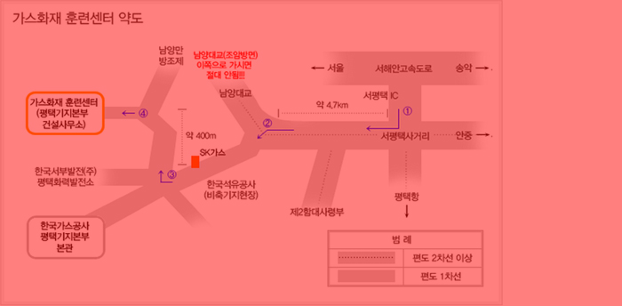

가스화재 훈련센터
가스화재훈련의 목적
가스수요의 증가추세와 화재발생의 복잡화로 대형화재의 위험이 상존하여 가상화재의 체험과 실질적인 소방훈련을 통하여 가스화재 사고의 미연의 방지와 유사시 신속·정확·안전하게 대응할수 있는 능력을 배양하기 위함
가스화재훈련 시설
- 모의소화훈련시설(옥외) : 펌프화재 외 5개 시설
- 펌프화재, 용기화재, 배관화재, 탱크로리 로딩암화재, 핀홀화재, LNG 저장탱크화재
- 화재훈련 체험관(옥내 1층) : 영상화재체험 외 7개 시설
- 오리엔테이션, 영상화재체험, 안전작업체험, 정전기폭발체험, 화재대피훈련체험, 심폐소생술체험, 가정 내 가스화재체험, 정보검색 등
- 완강기 훈련장(옥외 2층)
- 실내교육장(옥내 2층)
- 강단 계단 극장식 구조(50석 규모)
교육훈련 내용
- 훈련센터소개 및 교육훈련안내
- LNG의 안전성 및 화재취급방안
- 소화이론 및 소화기사용법
- 가스사고사례, 시청각교육
- 완강기 대피훈련
- 화재훈련체험관 실습
- 모의화재훈련설비 소화훈련
교육훈련 실적
- 한국가스공사 전직원
- 해군2함대, 평택소방서, 한국석유공사, 한국가스안전공사,한국가스기술공사, OCI(주), OCI머티리얼즈(주), 현대제철, 중국 강소성 시원전원, 싱가폴 시운전원, 탱크로리공급업체, (주)경암 등
교육훈련 문의
- 평택기지본부 안전환경팀 - 전화 : 031-680-3231
오시는 길

- 서해안고속도 "서평택IC"로 나와서 첫 번째 사거리에서 우회전
- "원정삼거리"라는 이정표에서 좌회전
- "SK가스"를 지나 나오는 첫 번째 사거리에서 우회전
- 400m 직진 후 좌측에 평택복합화력 건설현장 입구로 들어오자마자 우회전 → 당진항 모래부두 건설현장(막다른 곳) 앞에서 좌회전